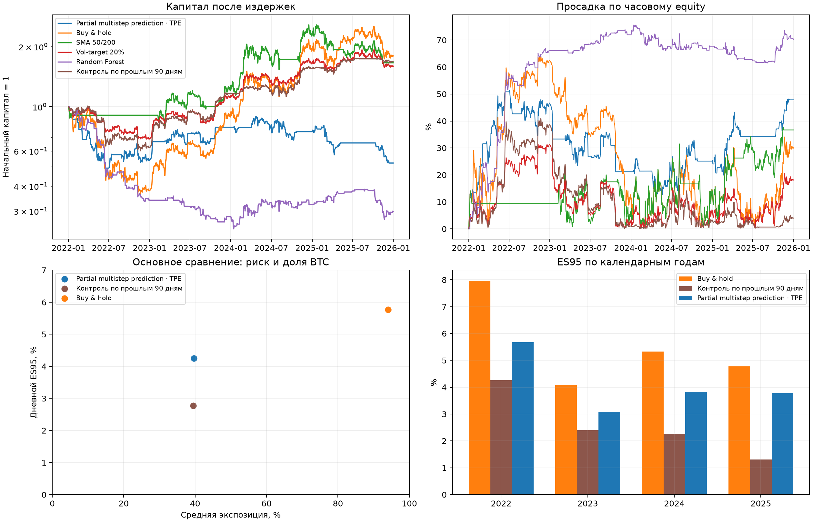

Метод Gromov–Baranov из статьи «Prediction after a Horizon of Predictability: Nonpredictable Points and Partial Multistep Prediction for Chaotic Time Series». Используется вариант с возмущёнными траекториями, усреднением конечных значений и правилом отказа rgdbscan. Торговые правила добавлены в этом исследовании.
Парный блочный интервал основной разности ES95 целиком выше нуля: Partial multistep prediction имеет больший хвостовой риск, чем заданный причинный контроль.
У Partial multistep prediction ниже одновременно просадка, волатильность и ES95, чем у 1 из 7 обычных стратегий в этом тесте. Выбранная настройка выполнила ограничения активности на validation.
Чистая доходность Partial multistep prediction за четыре года: -47.76%; у причинного контроля: 68.10%. При нулевых издержках и той же задержке результат Partial multistep prediction: -27.50%. Поэтому весь результат нельзя объяснить одними комиссиями.
Открыть интерактивный бэк-тест: капитал, сделки и просадки · Все метрики CSV · Выбранные параметры · Протокол
Официальные часовые свечи Binance BTCUSDT spot, 2019–2025. Архивы проверены SHA256. 63 отсутствующих или нулевых часа отмечены отдельно. Синтетические свечи используются только для причинного заполнения сетки модели; на них сделки не исполняются. Начальный капитал 100 000 USDT, без плеча и шортов, доходность денег равна нулю. Решение после закрытия бара 23:00 UTC, исполнение на следующем реальном открытии после ещё одного законченного часа: обычно в 01:00 UTC. Издержки 15 bps в каждую сторону: 10 bps комиссии плюс 5 bps дополнительной пропорциональной платы за проскальзывание.
Финальный Optuna TPE: 32 оценки, четыре последовательных квартала 2021 года. Критерий: средний квартальный ES95 плюс половина его стандартного отклонения. Ограничения: средняя экспозиция не ниже 10% и минимум 12 входов за validation-год. Затем параметры заморожены; тест 2022–2025 выполняется с квартальным переобучением на последних 10 000 часах. Предыдущие наблюдения теста становятся обучающей историей только после наступления их времени. В гиперпараметры test не передаётся.
Протокол разрабатывался на validation: до финального поиска выполнено ещё 19 завершённых оценок. Всего сохранено 51 завершённых оценок и 40 уникальных конфигураций, часть повторов использовала кэш. Первый инженерный запуск остановлен для усиления проверки кэшей. В следующем запуске было требование 2% экспозиции в каждом квартале; первые 16 вариантов его не выполнили. Его сняли до просмотра test, сохранив общие ограничения активности. Длительный отказ от торговли допустим для этого метода. Отсутствие входов в Q1 2021 связано с выходом цены за исторический диапазон мотивов, а само по себе не доказывает распознавание повышенного риска. Все предыдущие trials сохранены.
Разрешённый пользователем поиск меняет L/K, r/μ Wishart и параметры прогноза. Все комбинации промежутков выбранного L/K сохраняются, Wishart включён. Прогноз всегда на 24 часа. Long на 95% доступного капитала при принятом прогнозе роста более 0,3%, иначе cash. Неизменный сигнал не вызывает повторного входа; отдельно указанные exposure controls и vol-target ребалансируются ежедневно. Правило торговли — новая надстройка, не торговая стратегия из исходной статьи. Её опубликованная конфигурация оставлена отдельным контролем.
{
"length": 3,
"max_gap": 3,
"r": 5,
"mu": 0.02,
"epsilon": 0.06502211399080364,
"cluster_eps": 0.008371633741976994,
"min_samples": 3,
"perturbation_variance": 5.8071705698799575e-05,
"paths": 16,
"training_hours": 10000
}
| strategy | total_return | cagr | max_drawdown | daily_volatility | es95 | mean_exposure | entries |
|---|---|---|---|---|---|---|---|
| Деньги | 0.00% | 0.00% | 0.00% | 0.00% | 0.00% | 0.00% | 0 |
| Buy & hold | 79.47% | 15.74% | 64.03% | 48.19% | 5.77% | 94.02% | 1 |
| SMA 50/200 | 66.04% | 13.51% | 37.72% | 35.12% | 4.36% | 56.07% | 5 |
| Momentum 90 | 118.11% | 21.53% | 38.44% | 33.38% | 4.20% | 52.57% | 30 |
| Donchian 20/10 | 34.13% | 7.62% | 37.88% | 30.24% | 3.90% | 43.05% | 22 |
| RSI 14 | 54.86% | 11.55% | 23.81% | 22.28% | 2.58% | 14.67% | 11 |
| Vol-target 20% | 59.58% | 12.39% | 31.47% | 22.30% | 2.66% | 45.08% | 808 |
| Partial multistep prediction · TPE | -47.76% | -14.98% | 51.39% | 30.27% | 4.25% | 39.70% | 115 |
| Partial multistep prediction · параметры статьи | -33.01% | -9.53% | 40.86% | 26.67% | 3.73% | 27.49% | 213 |
| Partial multistep prediction без growth gate | -50.96% | -16.32% | 51.91% | 30.74% | 4.30% | 40.08% | 117 |
| Ближайшие мотивы + avg | -68.51% | -25.09% | 68.95% | 30.25% | 4.26% | 29.15% | 223 |
| Random Forest | -70.08% | -26.04% | 75.64% | 28.54% | 4.33% | 25.80% | 175 |
| Контроль по прошлым 90 дням | 68.10% | 13.87% | 40.91% | 23.21% | 2.78% | 39.51% | 705 |
| Ретроспективная постоянная доля | 42.89% | 9.33% | 33.82% | 20.42% | 2.45% | 39.67% | 725 |
daily_volatility — стандартное отклонение дневных доходностей × √365. ES95 — средняя потеря в худших ceil(5% × n) днях, ограниченная снизу нулём. max_drawdown использует часовую переоценку по Close; внутрисвечные просадки не измерены. Экспозиция фактическая, после изменения стоимости позиций. Доходность публикуется вместе с риском: уменьшение риска не означает прибыльности.

| year | strategy | total_return | cagr | max_drawdown | daily_volatility | es95 | mean_exposure | entries |
|---|---|---|---|---|---|---|---|---|
| 2022 | Деньги | 0.00% | 0.00% | 0.00% | 0.00% | 0.00% | 0.00% | 0 |
| 2023 | Деньги | 0.00% | 0.00% | 0.00% | 0.00% | 0.00% | 0.00% | 0 |
| 2024 | Деньги | 0.00% | 0.00% | 0.00% | 0.00% | 0.00% | 0.00% | 0 |
| 2025 | Деньги | 0.00% | 0.00% | 0.00% | 0.00% | 0.00% | 0.00% | 0 |
| 2022 | Buy & hold | -62.05% | -62.08% | 64.03% | 58.11% | 7.96% | 90.66% | 1 |
| 2023 | Buy & hold | 135.10% | 135.24% | 19.76% | 40.28% | 4.08% | 91.71% | 0 |
| 2024 | Buy & hold | 114.51% | 114.17% | 31.24% | 51.03% | 5.33% | 96.17% | 0 |
| 2025 | Buy & hold | -6.22% | -6.23% | 34.08% | 40.62% | 4.77% | 97.55% | 0 |
| 2022 | SMA 50/200 | -9.28% | -9.29% | 14.14% | 7.86% | 0.83% | 3.37% | 1 |
| 2023 | SMA 50/200 | 33.64% | 33.66% | 20.72% | 37.48% | 4.21% | 73.09% | 2 |
| 2024 | SMA 50/200 | 87.85% | 87.61% | 31.53% | 47.80% | 5.30% | 75.88% | 1 |
| 2025 | SMA 50/200 | -27.09% | -27.11% | 37.72% | 34.23% | 4.48% | 71.88% | 1 |
| 2022 | Momentum 90 | -34.12% | -34.14% | 34.57% | 17.14% | 2.76% | 6.49% | 8 |
| 2023 | Momentum 90 | 48.85% | 48.89% | 27.40% | 38.84% | 4.26% | 74.74% | 11 |
| 2024 | Momentum 90 | 97.45% | 97.18% | 22.21% | 44.53% | 4.97% | 74.36% | 9 |
| 2025 | Momentum 90 | 12.65% | 12.66% | 15.65% | 25.61% | 3.34% | 54.61% | 2 |
| 2022 | Donchian 20/10 | -35.73% | -35.75% | 37.88% | 27.67% | 4.18% | 29.58% | 5 |
| 2023 | Donchian 20/10 | 52.30% | 52.34% | 19.61% | 31.01% | 3.57% | 52.07% | 6 |
| 2024 | Donchian 20/10 | 55.82% | 55.68% | 29.38% | 37.70% | 4.48% | 53.88% | 6 |
| 2025 | Donchian 20/10 | -12.05% | -12.06% | 30.02% | 22.32% | 3.09% | 36.62% | 5 |
| 2022 | RSI 14 | 16.31% | 16.32% | 23.81% | 35.53% | 4.59% | 32.48% | 5 |
| 2023 | RSI 14 | 22.14% | 22.15% | 4.50% | 13.44% | 0.26% | 4.16% | 2 |
| 2024 | RSI 14 | 8.85% | 8.83% | 14.59% | 16.81% | 1.72% | 9.35% | 2 |
| 2025 | RSI 14 | 0.16% | 0.16% | 11.48% | 16.24% | 1.90% | 12.71% | 2 |
| 2022 | Vol-target 20% | -31.04% | -31.06% | 31.47% | 22.32% | 3.17% | 34.64% | 218 |
| 2023 | Vol-target 20% | 61.25% | 61.30% | 14.94% | 23.01% | 2.37% | 51.68% | 182 |
| 2024 | Vol-target 20% | 47.94% | 47.83% | 16.30% | 22.39% | 2.32% | 41.51% | 212 |
| 2025 | Vol-target 20% | -3.00% | -3.00% | 20.48% | 21.26% | 2.62% | 52.51% | 196 |
| 2022 | Partial multistep prediction · TPE | -46.17% | -46.19% | 51.39% | 39.32% | 5.68% | 54.04% | 26 |
| 2023 | Partial multistep prediction · TPE | 46.68% | 46.71% | 16.58% | 26.73% | 3.09% | 44.22% | 15 |
| 2024 | Partial multistep prediction · TPE | -4.98% | -4.97% | 24.89% | 29.06% | 3.83% | 36.60% | 49 |
| 2025 | Partial multistep prediction · TPE | -30.37% | -30.39% | 35.65% | 23.51% | 3.78% | 23.94% | 25 |
| 2022 | Partial multistep prediction · параметры статьи | -38.81% | -38.84% | 40.86% | 34.99% | 5.18% | 28.09% | 49 |
| 2023 | Partial multistep prediction · параметры статьи | 25.97% | 25.99% | 22.58% | 23.05% | 2.82% | 23.94% | 55 |
| 2024 | Partial multistep prediction · параметры статьи | 1.01% | 1.01% | 27.11% | 25.09% | 3.43% | 30.11% | 44 |
| 2025 | Partial multistep prediction · параметры статьи | -13.95% | -13.96% | 23.09% | 21.43% | 3.07% | 27.82% | 65 |
| 2022 | Partial multistep prediction без growth gate | -48.56% | -48.59% | 51.91% | 39.71% | 5.71% | 55.06% | 27 |
| 2023 | Partial multistep prediction без growth gate | 47.77% | 47.81% | 16.58% | 26.74% | 3.09% | 44.48% | 16 |
| 2024 | Partial multistep prediction без growth gate | -1.80% | -1.80% | 24.68% | 30.79% | 4.01% | 36.85% | 49 |
| 2025 | Partial multistep prediction без growth gate | -34.30% | -34.32% | 38.43% | 23.02% | 3.77% | 23.94% | 25 |
| 2022 | Ближайшие мотивы + avg | -59.23% | -59.26% | 61.51% | 43.52% | 6.75% | 44.84% | 61 |
| 2023 | Ближайшие мотивы + avg | 10.05% | 10.06% | 20.89% | 24.44% | 3.14% | 23.43% | 49 |
| 2024 | Ближайшие мотивы + avg | -4.06% | -4.05% | 22.71% | 26.50% | 3.53% | 26.46% | 62 |
| 2025 | Ближайшие мотивы + avg | -26.84% | -26.86% | 33.36% | 21.48% | 2.98% | 21.86% | 51 |
| 2022 | Random Forest | -66.02% | -66.04% | 67.03% | 35.98% | 6.28% | 26.50% | 49 |
| 2023 | Random Forest | -17.21% | -17.22% | 27.76% | 17.93% | 2.55% | 21.36% | 31 |
| 2024 | Random Forest | 15.12% | 15.09% | 19.73% | 34.61% | 4.65% | 32.97% | 49 |
| 2025 | Random Forest | -7.62% | -7.62% | 31.70% | 20.69% | 2.88% | 22.38% | 46 |
| 2022 | Контроль по прошлым 90 дням | -37.66% | -37.68% | 40.91% | 31.00% | 4.26% | 46.63% | 215 |
| 2023 | Контроль по прошлым 90 дням | 86.37% | 86.45% | 12.73% | 24.90% | 2.39% | 54.77% | 145 |
| 2024 | Контроль по прошлым 90 дням | 33.67% | 33.59% | 16.03% | 20.70% | 2.26% | 36.39% | 187 |
| 2025 | Контроль по прошлым 90 дням | 8.25% | 8.25% | 8.70% | 11.53% | 1.31% | 20.26% | 158 |
| 2022 | Ретроспективная постоянная доля | -31.27% | -31.29% | 33.82% | 25.25% | 3.45% | 39.55% | 192 |
| 2023 | Ретроспективная постоянная доля | 48.40% | 48.44% | 9.12% | 17.49% | 1.77% | 39.71% | 177 |
| 2024 | Ретроспективная постоянная доля | 41.15% | 41.05% | 13.20% | 21.06% | 2.20% | 39.73% | 177 |
| 2025 | Ретроспективная постоянная доля | -0.74% | -0.74% | 15.29% | 16.57% | 1.95% | 39.70% | 179 |
| decision_bar | origins | forecast_coverage | h1_coverage | outside_train_range | missing_context |
|---|---|---|---|---|---|
| 2022 | 365 | 0.928767 | 0.942466 | 0.230137 | 0.0 |
| 2023 | 365 | 0.810959 | 0.810959 | 0.191781 | 0.0 |
| 2024 | 366 | 0.693989 | 0.693989 | 0.311475 | 0.0 |
| 2025 | 365 | 0.841096 | 0.852055 | 0.227397 | 0.0 |
| group | origins | evaluated | mean_absolute_underlying_return | underlying_es95 | relative_forecast_rmse |
|---|---|---|---|---|---|
| accepted_cash | 585 | 584 | 0.01854 | 0.05783 | 0.06721 |
| accepted_long | 611 | 611 | 0.01787 | 0.06160 | 0.08979 |
| no_terminal_forecast | 265 | 265 | 0.01957 | 0.06749 | NaN |
Эти условные группы — диагностика, а не доходность стратегии. Последний 24-часовой target вне диапазона данных не оценивается. «cm» отключает growth gate, но сохраняет отказ при отсутствии соседей; forced nearest использует другой агрегатор avg. Потоки шума cm и rgdbscan расходуются по-разному из-за дополнительных пробных шагов, поэтому их сравнение не изолирует единственное булево решение при идентичных случайных траекториях.
| comparator | primary | block_days | difference | lower | upper |
|---|---|---|---|---|---|
| Контроль по прошлым 90 дням | False | 7 | 1.47 п.п. | 0.87 п.п. | 1.98 п.п. |
| Контроль по прошлым 90 дням | True | 14 | 1.47 п.п. | 0.79 п.п. | 2.05 п.п. |
| Контроль по прошлым 90 дням | False | 28 | 1.47 п.п. | 0.78 п.п. | 2.12 п.п. |
| Ретроспективная постоянная доля | False | 14 | 1.80 п.п. | 1.27 п.п. | 2.26 п.п. |
| Buy & hold | False | 14 | -1.53 п.п. | -2.19 п.п. | -0.98 п.п. |
| SMA 50/200 | False | 14 | -0.12 п.п. | -0.81 п.п. | 0.58 п.п. |
| Random Forest | False | 14 | -0.08 п.п. | -0.93 п.п. | 0.73 п.п. |
| Partial multistep prediction без growth gate | False | 14 | -0.05 п.п. | -0.15 п.п. | 0.00 п.п. |
Парный circular moving-block bootstrap: 2000 повторов, основной блок 14 дней, чувствительность 7/28 дней. Одна основная гипотеза — сравнение с причинной долей по прошлым 90 targets. Остальные интервалы описательные. Ретроспективная постоянная доля вычислена по всему тесту: это не исполнимая заранее стратегия, а диагностика; её bootstrap не учитывает неопределённость самой выбранной доли. Четыре года одного рынка не доказывают снижение риска на любых будущих режимах.
| seed | total_return | cagr | max_drawdown | daily_volatility | es95 | mean_exposure | entries |
|---|---|---|---|---|---|---|---|
| 42 | -47.76% | -14.98% | 51.39% | 30.27% | 4.25% | 39.70% | 115 |
| 7 | -37.70% | -11.16% | 46.37% | 30.22% | 4.12% | 39.24% | 119 |
| 123 | -52.65% | -17.05% | 53.06% | 30.19% | 4.24% | 39.31% | 114 |
| strategy | costs_bps | delay_hours | total_return | max_drawdown | es95 | mean_exposure |
|---|---|---|---|---|---|---|
| Partial multistep prediction · TPE | 0 | 0 | -30.28% | 48.94% | 4.27% | 39.70% |
| Контроль по прошлым 90 дням | 0 | 0 | 70.85% | 40.61% | 2.78% | 39.51% |
| Buy & hold | 0 | 0 | 79.64% | 64.02% | 5.77% | 94.02% |
| SMA 50/200 | 0 | 0 | 66.22% | 37.48% | 4.36% | 56.07% |
| Partial multistep prediction · TPE | 0 | 1 | -27.50% | 48.98% | 4.22% | 39.70% |
| Контроль по прошлым 90 дням | 0 | 1 | 70.86% | 40.71% | 2.78% | 39.51% |
| Buy & hold | 0 | 1 | 80.00% | 64.03% | 5.77% | 94.03% |
| SMA 50/200 | 0 | 1 | 68.43% | 37.54% | 4.36% | 56.07% |
| Partial multistep prediction · TPE | 0 | 2 | -31.27% | 49.37% | 4.23% | 39.70% |
| Контроль по прошлым 90 дням | 0 | 2 | 71.50% | 40.52% | 2.78% | 39.52% |
| Buy & hold | 0 | 2 | 80.91% | 64.05% | 5.78% | 94.06% |
| SMA 50/200 | 0 | 2 | 71.56% | 36.19% | 4.36% | 56.07% |
| Partial multistep prediction · TPE | 5 | 0 | -37.49% | 49.76% | 4.28% | 39.70% |
| Контроль по прошлым 90 дням | 5 | 0 | 69.92% | 40.67% | 2.78% | 39.51% |
| Buy & hold | 5 | 0 | 79.46% | 64.02% | 5.77% | 94.02% |
| SMA 50/200 | 5 | 0 | 65.43% | 37.54% | 4.36% | 56.07% |
| Partial multistep prediction · TPE | 5 | 1 | -35.01% | 49.79% | 4.23% | 39.70% |
| Контроль по прошлым 90 дням | 5 | 1 | 69.94% | 40.78% | 2.78% | 39.51% |
| Buy & hold | 5 | 1 | 79.82% | 64.03% | 5.77% | 94.03% |
| SMA 50/200 | 5 | 1 | 67.63% | 37.60% | 4.36% | 56.07% |
| Partial multistep prediction · TPE | 5 | 2 | -38.38% | 50.18% | 4.24% | 39.70% |
| Контроль по прошлым 90 дням | 5 | 2 | 70.57% | 40.58% | 2.78% | 39.52% |
| Buy & hold | 5 | 2 | 80.73% | 64.05% | 5.78% | 94.05% |
| SMA 50/200 | 5 | 2 | 70.75% | 36.25% | 4.36% | 56.07% |
| Partial multistep prediction · TPE | 15 | 0 | -49.76% | 51.35% | 4.30% | 39.70% |
| Контроль по прошлым 90 дням | 15 | 0 | 68.08% | 40.80% | 2.78% | 39.51% |
| Buy & hold | 15 | 0 | 79.11% | 64.02% | 5.77% | 94.01% |
| SMA 50/200 | 15 | 0 | 63.86% | 37.65% | 4.37% | 56.07% |
| Partial multistep prediction · TPE | 15 | 1 | -47.76% | 51.39% | 4.25% | 39.70% |
| Контроль по прошлым 90 дням | 15 | 1 | 68.10% | 40.91% | 2.78% | 39.51% |
| Buy & hold | 15 | 1 | 79.47% | 64.03% | 5.77% | 94.02% |
| SMA 50/200 | 15 | 1 | 66.04% | 37.72% | 4.36% | 56.07% |
| Partial multistep prediction · TPE | 15 | 2 | -50.47% | 51.76% | 4.26% | 39.70% |
| Контроль по прошлым 90 дням | 15 | 2 | 68.72% | 40.71% | 2.78% | 39.52% |
| Buy & hold | 15 | 2 | 80.38% | 64.04% | 5.78% | 94.05% |
| SMA 50/200 | 15 | 2 | 69.13% | 36.37% | 4.36% | 56.07% |
| Partial multistep prediction · TPE | 30 | 0 | -63.79% | 63.96% | 4.33% | 39.69% |
| Контроль по прошлым 90 дням | 30 | 0 | 65.36% | 40.99% | 2.78% | 39.51% |
| Buy & hold | 30 | 0 | 78.59% | 64.02% | 5.77% | 94.01% |
| SMA 50/200 | 30 | 0 | 61.54% | 37.83% | 4.37% | 56.07% |
| Partial multistep prediction · TPE | 30 | 1 | -62.35% | 62.57% | 4.28% | 39.69% |
| Контроль по прошлым 90 дням | 30 | 1 | 65.39% | 41.10% | 2.78% | 39.51% |
| Buy & hold | 30 | 1 | 78.95% | 64.02% | 5.77% | 94.02% |
| SMA 50/200 | 30 | 1 | 63.68% | 37.89% | 4.37% | 56.07% |
| Partial multistep prediction · TPE | 30 | 2 | -64.31% | 64.65% | 4.29% | 39.70% |
| Контроль по прошлым 90 дням | 30 | 2 | 65.98% | 40.90% | 2.78% | 39.52% |
| Buy & hold | 30 | 2 | 79.86% | 64.04% | 5.77% | 94.04% |
| SMA 50/200 | 30 | 2 | 66.72% | 36.55% | 4.36% | 56.07% |
Готовая платформа — Backtesting.py FractionalBacktest. В репозитории есть ledger прогнозов, границы обучения, хеши моделей/данных/кода, сделки, заявки и почасовой капитал. Тесты проверяют причинность, независимость RNG от будущих origins, точный пример комиссий и исполнения, годовую базу equity и ребалансировку. Манифест моделей · Манифест данных · Замороженный вход теста.
uv sync --extra trading uv run --extra trading python -m adis.trading.data uv run --extra trading python -m adis.trading.experiment tune --trials 32 uv run --extra trading python -m adis.trading.evaluation uv run --extra trading python -m adis.trading.audit uv run --extra trading python -m adis.trading.report
Чужие опубликованные доходности с иных периодов не перенесены в таблицу. Random Forest и технические стратегии реализованы как общие бенчмарки и исполнены на том же календаре и с теми же издержками. Оптимизация Partial multistep prediction и фиксированные стандартные настройки бенчмарков не позволяют объявлять превосходство над всеми их возможными настройками.